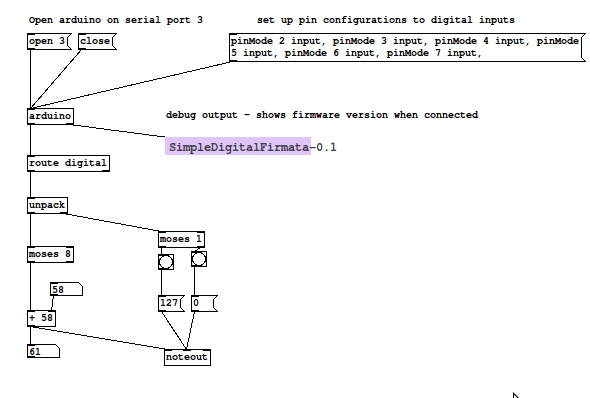
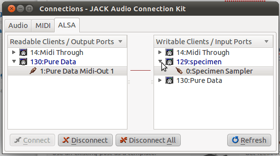

Pedal Fighter first play test
I have the new PF prototype wired up and working now using the Firmata Arduino firmware and Pure Data on my Ubuntu laptop. I’m using a test patch that I wired up in PD the last time around.
I’m using a slightly modified version of the SimpleDigitalFirmata firmware that ships with the Arduino IDE. The first change I made is to patch a bug in the patch. This is a known error and will probably be fixed in a later version of the IDE so you may not have to deal with this. If the sketch fails with the error:
/usr/share/arduino/libraries/Firmata/Boards.h: In function ‘void loop()’:
/usr/share/arduino/libraries/Firmata/Boards.h:270: error: too few arguments to function ‘unsigned char readPort(byte, byte)’
SimpleDigitalFirmata:56: error: at this point in fileyou will have to make this fix.
void loop()
{
byte i;
for (i=0; i<TOTAL_PORTS; i++) {
// IMPORTANT! bitmask set to 255
outputPort(i, readPort(i, 255));
}
while(Firmata.available()) {
Firmata.processInput();
}
}I prefer not to deal with pull up/pull down resistors since the Arduino has some built in, so I make the following tweak to enable the built-in pull ups:
void setPinModeCallback(byte pin, int mode) {
if (IS_PIN_DIGITAL(pin)) {
pinMode(PIN_TO_DIGITAL(pin), mode);
// enable internal pull up resistors with digitalWrite
digitalWrite(pin, HIGH);
}
}You can also make this change in the Firmata shared library code as outlined here, although I chose to make my changes locally in the sketch. Note that setting up the Arduino to use pull up resistors means that everything will be inverted from most of the Firmata examples you will find on the Web. We are using PD so it is trivial to invert the signals so this is really not an issue at all, just something to keep in mind when debugging. To reiterate, when we hit a button the Firmata object in PD will go low rather than high. The steady state when a button is not depressed will be high.
Everything we do with respect to Midi here in Linux depends on a running Jack server, so let’s run qjackctl and start the server. I use pasuspender to keep pulse audio from getting in the way:
$ pasuspender qjackctlHere is the test PD patch I’m using to convert the Firmata serial data to Midi. Note that the Pduino.pd file from the Pduino distribution will be necessary for this to work, and under Linux we have to add /usr/lib/pd-extended/extra/flatspace to the PD search path. This is done using file->path once PD is running.

Another thing to be aware of is that the Arduino might come up as a different serial device on your machine. In the patch shown above you can see the serial port given to the connect message is 3. Mine tends to be /dev/ttyACM3 (hence, port number 3), but if the USB connection is reconnected frequently it can change. Best to be safe and use dmesg to figure out what the Aruino was detected as.
Once PD is running, select ALSA Midi as the output system in PD. This should cause PDs Midi output to appeaer in the Jack connection manager:

I used the Specimen sampler to produce the sounds in my test, which you can see in the connections window in the above screenshot. I got pretty good latency results. I’m not sure what the numbers are actually, but I suspect that the MIDI path has very little contribution compared to anything in the audio path.